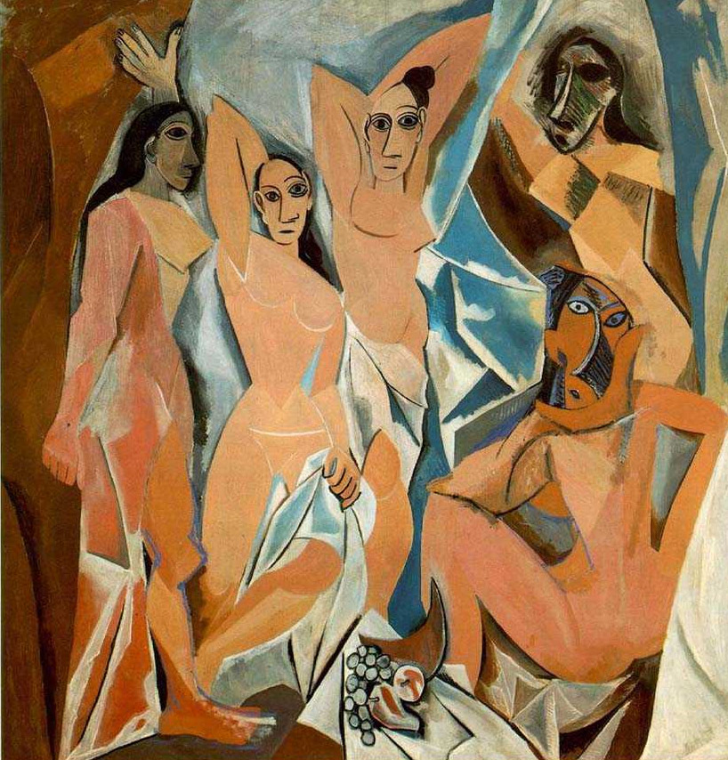
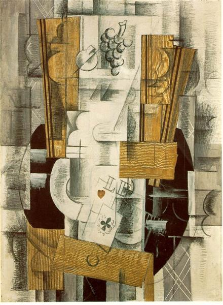

В този текст изследвам развитието на психоанализата и развитието в изкуството в приблизително един и същи исторически период: как теорията на Фройд за психичния апарат се свързва с кубизма и чрез картината на Пикасо „Герника“, конкретно с войната като конфликт, принадлежащ едновременно на вътрешния и на външния ни свят.
Психоанализата ни дава възможност да мислим за динамиката на този конфликт, актуален и днес в социо-политическата ни действителност. Тя ни помага да разбираме как индивидуалното и социалното си взаимодействат така, че да поддържат военното положение. Готовността ни да се ангажираме с размисъл и осмисляне на този въпрос е възможността да запазим човешката си свобода, намираща своя обществен израз в демокрацията.
Топографският модел на Фройд
Топографският модел, предложен от Фройд през 1915 г., е първата от общо петте гледни точки към разбирането за организацията на психиката и на психичните феномени, заедно с динамичната, икономическата, структурната и генетичната. Този модел описва психиката като разделена на три системи: несъзнавано, предсъзнавано-съзнавано и съзнавано.
Тези системи се характеризират с форми на психично функциониране: първичен или вторичен процес; видове енергия: свободна или свързана; и регулаторни принципи, според които действат принципът на удоволствието и принципът на реалността. Топографската теория на Фройд отразява връзката на психоанализата с неврофизиологията и анатомията.
Несъзнавано, предсъзнавано и съзнавано
Системата несъзнавано съдържа производни на нагоните под формата на желания и спомени, представени в режим на първичен процес. Той действа според принципа на удоволствието, не се подчинява на логиката на външния свят, а връзките между елементите му са нестабилни и хаотични. Първичните процесни мисли се изразяват в образи, предметни представи, използващи изместване, сгъстяване и символизация.
Системата предсъзнавано-съзнавано съдържа мисли и спомени, които са по-скоро описателни, отколкото динамично несъзнавани, защото могат да станат част от системата съзнавано веднага щом вниманието се насочи към тях.
Тази система функционира в съответствие с вторичния процес, който действа според принципа на реалността. Той е свързан с езика, логиката и будното мислене на човек. Във вторичния процес енергията е „свързана“ и се оттича по контролиран начин. Представите се инвестират по-стабилно, възможно е отлагане на удоволствието и чрез мисловни пробни действия да се опитат други възможности за задоволяване.
Системата съзнавано представлява психично състояние, което се характеризира с осъзнатост. Когато е в съзнание, човек е способен да осъзнава възприятието, паметта, мисълта, действието, себе си или дори самия акт на осъзнаване. Съзнаваното включва осъзнаване и интегриране на вътрешните и външните възприятия, както и готовност за реагиране на околната среда.
Цензура, регресия и съпротива
Между всяка от тези системи е разположена цензура, която възпрепятства и контролира преминаването на несъзнаваните желания и произтичащите от тях образувания. Тя действа между системите несъзнавано и предсъзнавано, както и между предсъзнавано и съзнавано, и се разполага в точката на възникване или на изтласкване.
Ефектите ѝ са по-ясно забележими при сънуването, когато цензурата е частично отслабена. Състоянието на сън не позволява на съдържанията на несъзнаваното да пробият на нивото на двигателната активност, но понеже е възможно да влязат в конфликт с желанието за сън, цензурата продължава да действа по отслабения си начин.
Регресията представлява връщане назад към по-ранно състояние на психичното функциониране. Тя може да е свързана с либидната фаза, функционирането на егото и/или връзката с обекта, следователно може да има теоретично, развитийно и клинично значение. Регресията свързва основни концепции в психоанализата, например необходимостта от разбиране за развитието на ума, идеята за динамичното несъзнавано и централното място на преноса в клиничната психоанализа.
През 1900 г. Фройд очертава три вида регресия, които разбира като взаимосвързани: топографска регресия, формална регресия и темпорална регресия. С развитие на либидната теория между 1905 и 1916 г. той започва да изследва регресията и фиксацията във връзка с психосексуалното развитие.
Съпротивата е несъзнаваното противопоставяне на човек, в частност на пациента, да се откаже от познати компромиси и да се изправи пред емоционално болезнено самоосъзнаване. Тя може да се изрази чрез психични процеси, фантазии, спомени, характерови защити и поведение.
Желание, сънища и прикриващи спомени
Има връзка между съпротивата и преноса: съпротивата използва преноса, но не представлява същността му. В динамичната теория на Фройд желанието е един от полюсите на защитния конфликт: несъзнаваното желание се стреми да се осъществи, възстановявайки според законите на защитния процес знаците, свързани с първите преживявания на задоволяване.
Фройдовата концепция за желанието се отнася до несъзнаваното желание, свързано с неразрушимите детски знаци. По подобен начин, макар и обичайно в много по-замаскирана форма, сънищата представят несъзнавани детски желания, които се изпълняват, за да се поддържа спането. Ако тези желания не са достатъчно замаскирани, те предизвикват такава степен на безпокойство, че сънят не успява да опази спането и сънуващият се събужда.
Фантазиите са производно на несъзнавани модели или структури. Формирането им се определя отчасти от нивото на психосексуално развитие и се групира около определени основни желания. Структурата на фантазията се модифицира от защитна дейност, така че несъзнаваната фантазия се появява в съзнанието като компромисна формация.
Прикриващите спомени са спомени от детството, които покриват или „закриват“ по-афективно натоварен, понякога травматичен спомен за нещо по-значимо от спомняното. Както симптомите, така и грешките са повлияни от изтласкването, което се опитва да предотврати осъзнаването на несъзнавани психични процеси.
Кубизмът и въпросът за реалността
Едно от историческите събития в изкуството, съвпадащо с част от периода, в който Фройд работи върху топографския модел, е възникването на кубизма. Счита се, че той започва да се дефинира от Пабло Пикасо и Жорж Брак през 1907-1908 г. и че до 1917 г. е част от водещите течения в изкуството на това време.
Впускайки се да изследвам връзките между развитието на психоанализата в този период и кубизма, открих, че ги свързват множество общи въпроси, отнасящи се до реалността: вътрешна и външна; до процесите на репрезентиране и интерпретация; до съотнасянето между изкуството и други психични продукти, като езика и сънищата; до природата на детето и на примитивния ум.
Основната парадоксална цел на кубизма е да постигне по-голямо усещане за реалност, като казва, че реалността не може да бъде видяна само от една перспектива и че е комбинация от различни гледни точки и спомени. Умовете ни, казват кубистите, комбинират тези разнообразни перспективи, за да стигнат до различни гледни точки и да формират реалността.
Стилът на кубизма е във висока степен четириизмерен, съчетавайки дължина, площ, обем, както и хода на времето — съчетание, което лесно може да намери връзки с работата на психичния апарат.
От аналитичен към синтетичен кубизъм
Кубизмът се характеризира с два периода: ранен, или аналитичен кубизъм, до 1912 г., и висок, или синтетичен кубизъм, между 1912 и 1917 г. Аналитичният кубизъм се опитва да разбере не само как камерата или окото могат да заснемат даден образ, но и как умът го обработва. Художниците интелектуално деконструират структури, за да ги анализират и пресъздадат.

Синтетичният кубизъм, обратно, е по-малко фокусиран върху начина, по който даден образ бива виждан, и повече върху процеса на структуриране и проектиране, върху комбинирането и синтеза на форми в картината.

Друго твърдение е, че кубизмът възниква с интензифицирането на съживените латентни съдържания, които се прикриват и укротяват от художественото произведение, както при работата със сънища, симптоми или шеги. В кубизма превръщането на латентното в манифестирано се осъществява чрез класическите механизми на първичния процес: кондензация, изместване и символизация.
Или по друг начин: съживените латентни съдържания на Пикасо сякаш подхранват развитието на един двусмислен живописен стил, способен едновременно да разкрива и прикрива, да изразява и потиска скритото съдържание.
„Герника“ като образ на вътрешния и външния конфликт
Едно от най-известните произведения на Пикасо е картината „Герника“. Макар да е нарисувана през 1937 г., когато сюрреализмът е в разгара си и психоанализата е продължила развитието си след топографския модел, „Герника“ е картина в стила на кубизма. Избрах да съсредоточа вниманието си върху нея, защото е многопластова и може да бъде интерпретирана от художествена, морална, социално-политическа и психологическа перспектива — като сън, зареден с богата символика.

Тя е една от най-значимите антивоенни картини на 20 век. Изобразява жертвите от бомбардировката, извършена от германските нацисти и испанските фашисти по поискване на испанските националисти върху баския град Герника по време на Гражданската война в Испания. Мъжете, живеещи в града, са били на фронта, а пострадали от бомбардировката са предимно жени и деца.
В „Герника“ Пикасо не изобразява въздушното нападение или бомбите. Той рисува изкривени и деформирани жертви, всяка от които изглежда самотна и отделена — физически или емоционално. Вляво майка, държаща мъртво дете, се обръща към бик, който изглежда емоционално откъснат, а на земята лежи разчленен войник. В центъра цвилещ, ранен кон се обръща към бика, но без резултат, а между бика и коня самотна птица пада върху маса.
Вдясно полуклекнала жена, бягаща от горяща къща, се концентрира върху лампа, а не върху другите фигури, докато друга самотна жена е в пламъци. Над тази касапница друга, отделна жена държи лампа, а главата и ръката ѝ излизат от прозореца на втория етаж на къщата.
Психоаналитично ориентиран анализ на подготвителните студии на Пикасо за „Герника“ показва, че Пикасо е бил във висока степен ангажиран с темите за привързаността, раздялата, отделянето и съзряването, свързани със загубата, смъртта и разрушението.
Символична реконструкция и възможност за мир
Интегрирайки историческите обстоятелства, при които Пикасо рисува картината, неговата личност, биографични данни и информация от други негови творби, се предполага, че създаването на „Герника“ има и личен смисъл: символичен опит за индивидуация и отделяне от майката чрез агресивни действия, изразени към изображенията на майчината фигура в картината.
Проследявайки тази социално-политическа и индивидуално психологическа линия в интерпретацията на „Герника“, преживяна като сън, бихме могли да погледнем на нея като колективен символ, с който хората, страдащи от конфликти — както военни, така и емоционални — могат да се идентифицират. А чрез идентификацията да се разкрие възможност за прозрение, че войната, в нейния буквален или вътрепсихичен смисъл, е фундаментално зло и че трябва да бъде символично реконструирана.
По този начин „Герника“ се превръща в символичен инструмент за устойчив мир — както във външната, така и във вътрешната реалност — и за изграждане на критични и отговорни граждани, процес, през който преминават и пациентите в една анализа. Или както Уиникот казва: способността на човек да бъде самостоятелен.
Източници
- (2016). PEP Consolidated Psychoanalytic Glossary.
- Лапланш, Ж., Понталис, Ж.-Б. (2009). Речник на психоанализата, ИК „Колибри“.
- Olson, N. (1997). Cubism, Freud, and the Image of Wit. Psychoanalytic Study of the Child, 52, 301-331.
- Ettinger, T. (1996). American Imago, 53(1), 53-89.
- Farthing, S. (2022). Art: The Whole History. Philip Cooper.
- Attia, O. (2011). Separation and Individuation in Picasso's Guernica. The International Journal of Psychoanalysis, 92, 1561-1581.
- Manojlovic, B. (2018). Representations of Contentious History Through Art: The Collective Trauma of Guernica. Cultural and Religious Studies, 6(11), 630-642.
- Pablo Picasso — Les Demoiselles d'Avignon, 1907.
- Georges Braque — Fruit Dish, 1913.
- Guernica, 1937 by Pablo Picasso.
- Taylor & Francis article, DOI: 10.1080/08322473.2003.11432253.